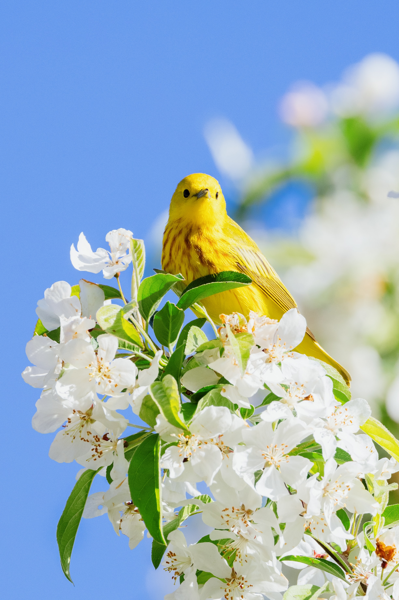
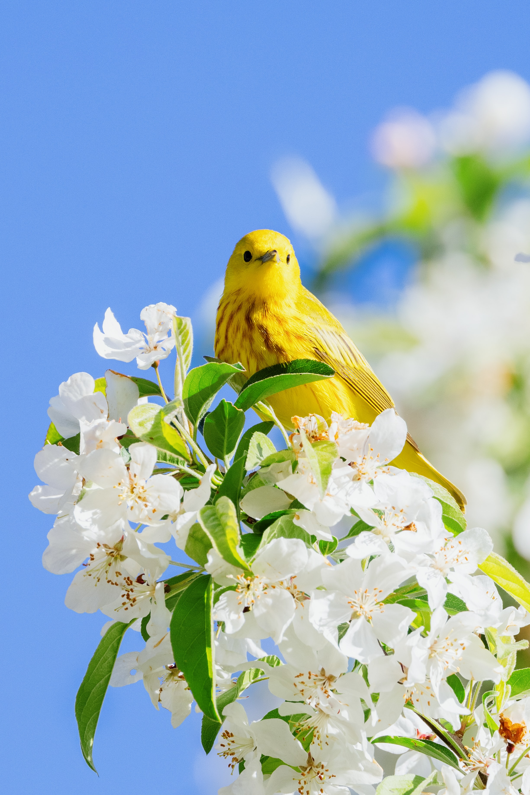

Spring 2023
From you have I been absent in the spring,
When proud-pied April, dressed in all his trim,
Hath put a spirit of youth in everything,
That heavy Saturn laughed and leaped with him.
Yet nor the lays of birds, nor the sweet smell
Of different flowers in odour and in hue,
Could make me any summer’s story tell,
Or from their proud lap pluck them where they grew:
Nor did I wonder at the lily's white,
Nor praise the deep vermilion in the rose;
They were but sweet, but figures of delight
Drawn after you, – you pattern of all those.
Yet seem’d it winter still, and, you away,
As with your shadow I with these did play.
- blossom
- flowers
- singing birds
| March | 31 days |
| April | 30 days |
| May | 31days |
 

summer
autumn